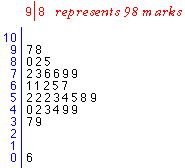

Outliers
Values that are considerably larger or smaller than the bulk of the data are called outliers. In the context of assessment, these correspond to students whose marks are unusually higher or lower than the rest of the marks.
Detection of outliers is particularly important. In a set of class marks, the outlier may have been incorrectly recorded. Or there may have been other anomalous circumstances associated with it — for example, the student may have been late or ill. Outliers must be carefully checked if possible. If anything atypical can be found, it is probably worth deleting the outlier from the data set and mentioning it separately in a report on the data.
Example
| The stem and leaf plot on the right shows a set of class marks (out of 100). The display shows one outlier — a student who only had a mark of 6 out of 100. Was this a mistake? Perhaps the mark should have been 60? What else might have explained this poor mark? |
 |